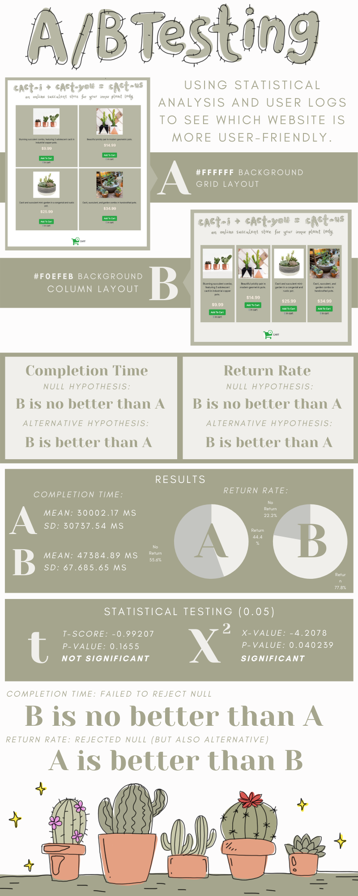

Using statistical testing of user-obtained logs to compare two versions of the same website.
Hypotheses
Completion Time
Null Hypothesis: B will do no better than A in terms of time to complete the given goal (usabiltiy and efficency).Alternative Hypothesis: B will do better than A due to more condensed format and ability to compare products side by side.
Return Rate
Null Hypothesis: B will do no better than A in terms of ability to complete the goal in one try (usability and understanding).Alternative Hypothesis: B will do better than A due to straightforward format, more immediate visibiltiy of prices, and smaller distance between prices and cart.
Data Collection
The website link was distributed with the instructions to purchase > $150 worth of cacti.
I sent out the link to the website to some friends. The website was also tested during studio.
I saved the logs once on Thursday night and once on Friday night, then concatenated the two logs.
A user "returned" if they visited the C website, then visited either the A or B website. A user did not return if their last log was in the C website, or if they never visited the C website.
I calculated completion time by the click time of the last click or the page load time of the last page (whichever came last) subtracted by the page load time of the first click.
Infographic

Takeaways
Throughout the completion of this project, I made the following observations:
- A/B Testing is pretty complicated. My website's checkout functionality was a bit buggy, and the website I thought would be more user-friendly (B) ended up doing worse. UI/UX testing specifically is vulnerable to a lot of external factors. Some of my user logs were a bit funny, which I would attribute to users refreshing repeatedly or opening the website, then getting distracted for a minute or two- this is something that I occasionally was guilty of myself.
- It's also hard to quantify whether a website is "good" or not. A low completion time is not necessarily good- people might spend more time on a website because they like it, or because they get distracted by an external factor. A user may return to the homepage because they want to buy more items. This kind of quantitative data is hard to interpret on its own. Simple task completion is not always representative of user experience.
- Design is subjective. Throughout the development of a design, you become more familiar with it and more inclined to think it works. Someone looking at it with fresh eyes may feel quite differently.
- The grid layout might be better than the column layout? Once again, this surprised me. However, I think it may have its merits and it could be something interesting to look at further. This may be related to screen reading patterns as well as open space distribution.